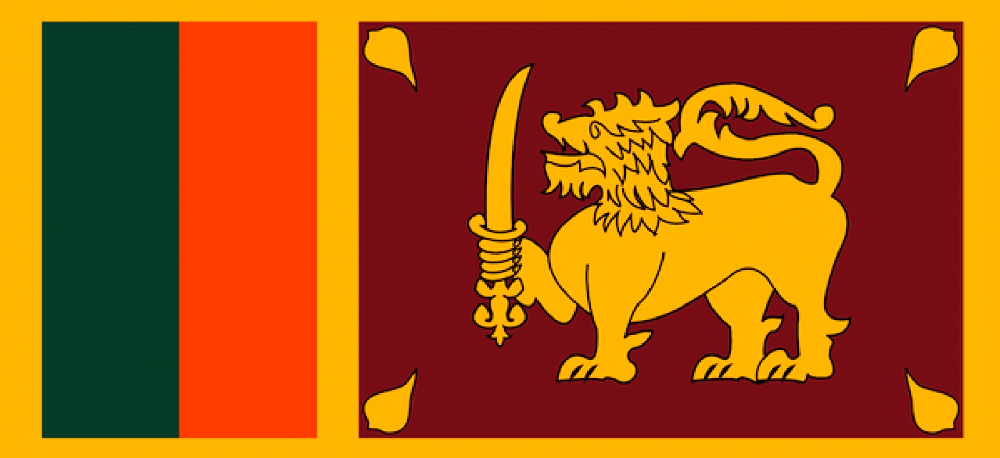

Economia
A economia deste país passa por uma lenta recuperação desde o final da Guerra Civil. Um dos fatores que tarda o avanço é a elevada dívida externa, que equivale a 79% do PIB Nacional. O foco para recuperação tem sido principalmente o setor de turismo e a maior atração de investimentos estrangeiros. Seu PIB é de 83,3 bilhões de dólares e a maior pare dele, 61,7% é vinda do comércio e dos serviços, como bancários e financeiros, seguros e telecomunicações. A indústria corresponde por 30,5% do Sri Lanka, em sua produção destaca-se o processamento de produtos primários, a atividade mineradora, o setor têxtil e a construção civil. A agropecuária responde por 7,8 do PIB, tendo como principal a rizicultura e a produção de chá, como também canela, cana-de-açúcar, coco, banana e milho.
História
A ocupação do Sri Lanka começou por volta de 500a.C., quando os cingaleses migraram da Índia em direção á Ilha. Dois séculos mais tarde, a religião budista foi introduzida no país, sendo hoje a fé predominante do Sri Lanka. As primeiras cidades e assentamentos populacionais se estabeleceram a partir do anos 200a.C., ao mesmo temo que surgiram os núcleos políticos chamados de Reino. O século XVI representa o início da colonização desse território pelos Europeus. À época do chamado Ceilão, o país conquistou a sua independência dos britânicos, que estabeleceram domínio no final do século XVII, em 4 de fevereiro de 1948. Sri Lanka tornou-se uma república e passou a adotar oficialmente esse nome em 1972.
Cultura
-
Música, celebrações, religião
A cultura Srilankesa recebeu, ao longo dos séculos, influências de vários países, principalmente da Índia e povos que colonizaram seu território como portugueses, holandeses e britânicos. A maior parte de sua população pertence a etnias sul-asiáticas. A religião exerce grande importância na vida desse povo que segue, em sua maioria, preceitos budistas. A música recebe influência portuguesa e religiosa, especialmente do budismo e hinduísmo. Suas celebrações anuais incluem o Dia da Independência, festas como o Thai Pongal, equivalente à festa da colheita realizada pelos tãmeis.
-
Culinária
Diversas influências mesclaram a gastronomia do Sri Lanka ao longo dos séculos, como por exemplo a gastronomia Indiana, que levou para esse país a utilização de diversas especiarias como o caril em pó, folhas de caril, gengibre, alho, pimenta, etc. Outro exemplo seria a herança Portuguesa, Holandesa e Britânica que introduziram novas técnicas de cozinha, doces, conservas e pães. Alguns pratos típicos dessa região são:- Ambul Thiyal
- Polos Curry
- Jaffna Curry
- Buriyani

Ambul Thiyal, principal prato típico
Bandeira
A bandeira do Sri Lanka, também chamada de bandeira Leão, é composta por uma leão amarelo portando uma espada kastane em sua pata dianteira direita em um fundo vermelho-escuro (amarronzado) com quatro folhas amarelas de Ficus religiosa (figueira-dos-pagodes ou Bo-tree) em cada canto do fundo. Ao redor do fundo existe uma moldura amarela e a sua esquerda existem duas listras verticais de igual tamanho em laranja e verde, sendo a listra laranja mais próxima ao leão. O leão representa a bravura dos cidadãos do Sri Lanka. As quatro folhas de figueira-dos-pagodes representam quatro conceitos centrais do Budismo: Mettā, Karuna, Mudita e Upekkha. As listras representam os dois principais grupos minoritários. A listra laranja representa os tâmeis e a listra verde representa os muçulmanos, sendo o fundo marrom representante da maioria cingalesa. A borda amarela ao redor da bandeira representa a unidade dos cidadãos do Sri Lanka.
